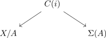

map from the collapse of a cofibration to the suspension
Proposition
let $X,A$ be topological spaces and $\iota: A \rightarrow X$ a cofibration. Then there exists a canonical map
\begin{align*}
X/A \rightarrow \Sigma(A)
\end{align*}
canonical up to homotopy
Proof
there exist

where $C(i) \rightarrow X/A$ is a Homotopy equivalence (cf. map from the mapping cone of a cofibration to the collapse as homotopy equivalence)
Choose a homotopy inverse $X/A \rightarrow C(i)$, which is unique up to homotopy, hence
\begin{align*}
X/A \rightarrow \Sigma(A)
\end{align*}